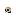

CHUẨN BỊ
Tĩnh lặng trước giông bão
THÁM HIỂM01
ĐOÀN ĐẾN SAU03:00
CHI TIẾT · 2×
TẦNG 01 / HẦM ĐÁ CỔ
◇ Kho báu ở tầng sâu
NHẤP ĐỂ DI CHUYỂN
Cuộn để zoom · Kéo chuột phải/WASD để di chuyển · Nhấp đôi phòng để nhìn gần
Chọn thẻ → chọn vị trí

45